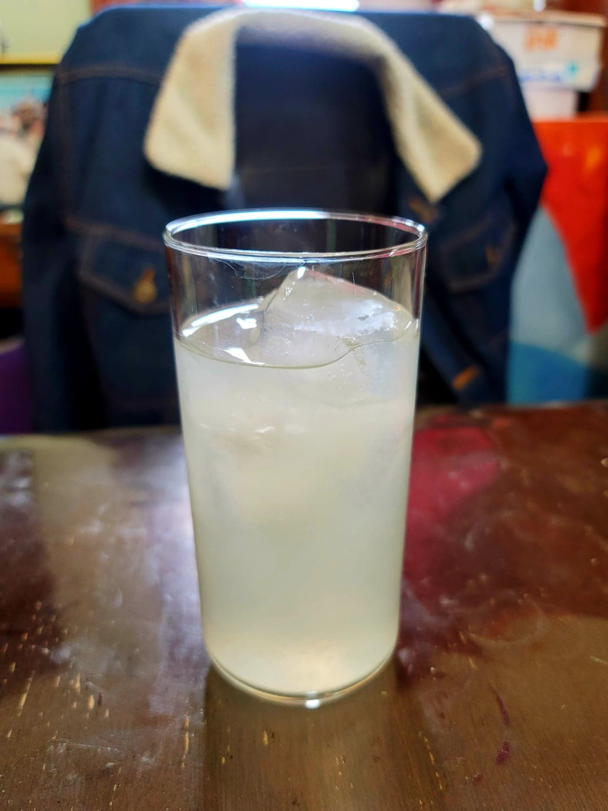

Lemonade

Ingredients:
- 1 1/2 cup Lemon juice, from about 6 large lemons
- ~1 1/2 cup Sugar, or to taste
- 8 cups Water, or 4 cups Water + 4 cups Ice
Instructions:
- In a saucepan over medium heat, stir together the sugar and 1 1/2 cup water. Once the sugar has completely dissolved, remove from heat.
- Add in the rest of the water. To make it cold faster, use half water and half ice. Taste and add more water or sugar as desired. Transfer to a pitcher and serve cold over ice.